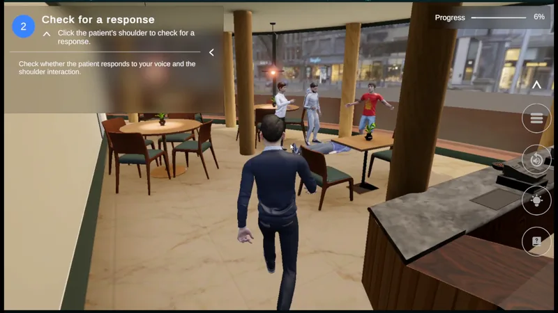
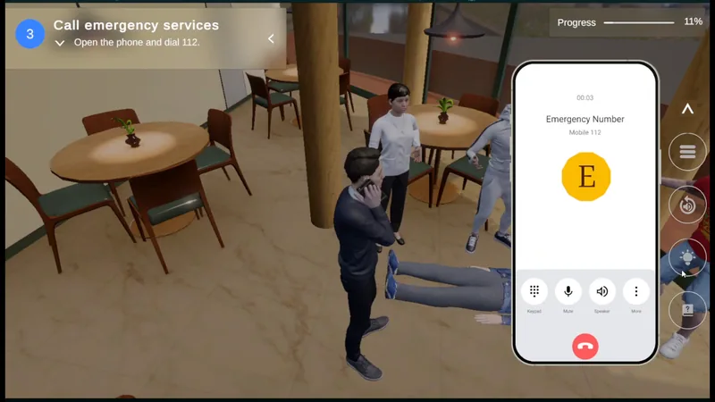
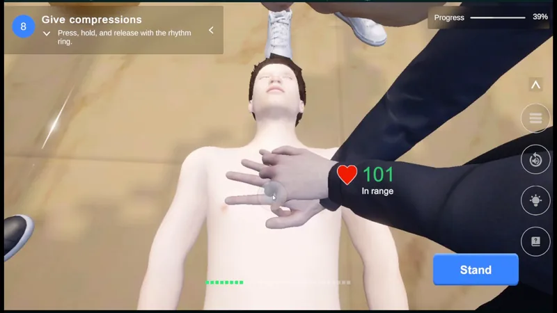
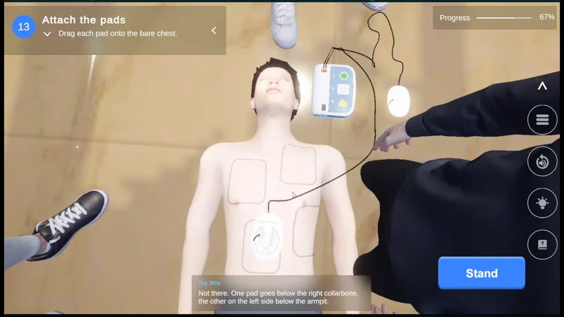

Work CPR Training Simulation
CPR Training Simulation
A third-person CPR trainer with guided, assessment and practice modes, scored from what the learner actually did.
What the video shows
89-second overview: a disclaimer and mode selection, a restaurant scenario, checking the patient, calling 112 on an in-game phone, chest compressions with live rate feedback, attaching AED pads with a corrective hint, a shock, the guided and practice summaries, and an assessment debrief scored 70/100, 'Needs improvement'.
- My role
- Developer, one of two. I built most of the simulation, from the interactive scenario to its feedback and scoring.
- Team
- 2 developers (including me)
- Organisation
- AMMACHI Labs, Amrita Vishwa Vidyapeetham
- Year
- 2026
- Status
- Feature-complete; final polish in progress
- Context
- Built for the Amrita Institute of Medical Sciences, Kochi, as a course on Amrita's AMPLE learning platform.
- Engine
- Unity 6 (URP) · C#
- Platform
- Web (WebGL), mouse, keyboard and touch; SCORM 2004 package for learning platforms
- Built with
The experience
The learner is the first person to reach someone who has collapsed in a restaurant. From there the simulation follows a real response: survey the scene, check for a response, call 112 on an in-game phone and stay on the line, check breathing and pulse, expose the chest, choose the hand position, give 30 compressions and two rescue breaths, and use an AED: switch it on, drag both pads into place, stand clear for the analysis, deliver the shock and go straight back to compressions.
The same scenario is offered in three modes:
- Guided: an 18-step route with narration, highlighted targets and on-screen instructions. It blocks the wrong task, but not a meaningful mistake inside the right one: a misplaced AED pad stays where it was dropped, and a hint explains where it should go. The run ends with a rhythm-accuracy summary and, if the rhythm was off, a suggestion to use Compression Practice.
- Assessment: no guidance and a 180-second clock. Actions are recorded and reviewed at the end in a scored debrief.
- Compression Practice: kneeling at the patient with a 110 BPM metronome, a feedback card after every 30 compressions, and a summary with the best set and the trend.
The video keeps the real results: the guided run reached 31 of 60 compressions in the target range, and the assessment scored 70 out of 100, rated "Needs improvement". The app opens with a disclaimer that it is a training tool, not a substitute for certified hands-on training.
My work
I'm one of the two developers on the CPR simulation at AMMACHI Labs, and I built most of it. On the scenario side that covers the session flow and three modes, third-person movement and camera staging, the patient assessment, compression and rescue-breath interactions, the in-game emergency call and the AED sequence. On the evidence side it covers the event log, guided progression, the 100-point debrief and practice coaching, along with the WebGL edition builds and the SCORM bridge.
A large part of the work is iteration on correctness rather than new screens. Each action needs to be recorded exactly once. A pause or a rescue breath must not distort the measured compression rate. The guided route should block the wrong task without hiding a meaningful mistake. And the debrief has to explain where every point came from. The project's EditMode and PlayMode tests sit alongside that work, and most of the scoring logic can be checked without loading the scene.
How it works
- InputKeyboard, mouse, touch controls, world taps and on-screen hotspots, filtered by the current gameplay mode.
- Clinical ownersAssessment, CPR sequence, compressions, breaths, phone and AED each record what happened.
- Event logOne append-only, in-memory list of timestamped events with typed details.
- ReadersGuided progression, the debrief and practice coaching each read the log; none of them changes gameplay.
One record of what happened. Each system that owns a clinical action (the assessment checks, the CPR sequence, compressions, breaths, the phone call and the AED) writes an event when something happens, with details such as compression rate, which hand position was chosen, or whether the airway was open before a breath. Animation, camera, audio and NPCs observe gameplay but never write evidence, so the score can't depend on presentation.
Guidance as a reader. Guided mode polls the log for new events and advances an ordered list of steps. It never records events itself and never touches gameplay, so switching guidance off leaves the simulation intact. A gate in front of interactions decides whether an action belongs to the current step; if the gate is missing or fails, the scenario degrades to ungated rather than getting stuck.
Compression feedback. A compression is counted on release. The rate comes from a rolling window of the last five intervals: below 100 per minute is "too slow", 100–120 is "in range", above 120 is "too fast". The window resets when the learner moves to breaths or pauses, so a deliberate break never reads as a slow compression. Depth and recoil are not measured, and the debrief says so.
A debrief built from facts. At the end of an assessment, a pure, deterministic pipeline extracts facts from the log, identifies the most important issues, scores a 100-point restaurant rubric (scene survey, responsiveness, breathing and pulse, the emergency call, starting CPR, hand position, rhythm, continuity, airway, breath timing, 30:2 cycles and each AED step) and builds the report the learner sees. The top three priority issues are shown first. A "Strong" rating requires the whole sequence in a safe order; anything less with compressions is "Needs improvement".
Editions and delivery. The project builds three WebGL editions (guided, assessment and all modes) from build profiles. A build script checks that the compiled edition marker matches the profile before accepting the build. A SCORM 2004 bridge reports completion and a score to a learning platform.
Tests. The project defines about 750 EditMode tests and 190 PlayMode tests. Because the scoring and fact-extraction code is pure, most rubric behaviour can be checked without loading the scene.
Decisions that shaped it
Separate evidence from presentation. Recording facts in one log and keeping every feedback system read-only means a new kind of feedback, or a new rubric, is a new reader rather than a change to gameplay code.
Block the wrong task, not the wrong attempt. Guided mode stops a learner jumping ahead, but lets them place a pad badly and then corrects them. That keeps the learning in the action rather than in a disabled button.
Timed assessment that always runs to the end. In assessment, the learner keeps cycling 30:2 until the clock runs out, as they would until help arrives. It makes the session length predictable and keeps "finishing early" from becoming a goal in itself.
Next steps
- Keep the scope clear. The simulation is a training tool and says so on its opening screen. The guided route follows the scenario design and makes no claim of clinical certification.
- Add a no-shock branch. The current scenario covers the shock-advised AED path; a no-shock scenario is the natural next one.
- Report the debrief score to the learning platform. The SCORM report currently sends compression-rhythm accuracy rather than the 100-point debrief score the learner sees. Send the debrief score and confirm how AMPLE records it before relying on the platform's pass/fail.
- Add automated runs of the existing EditMode and PlayMode suites on every change.
Screens
-

Guided, Assessment and Compression Practice modes. -

Guided mode: the current step and instruction are shown at the top left. -

Calling the emergency number from the in-game phone. -

Live compression-rate feedback: 101 per minute, in range. -

AED pad placement with a corrective hint after a misplaced pad. -

Assessment debrief: 70/100, 'Needs improvement', with domain scores and priority feedback.